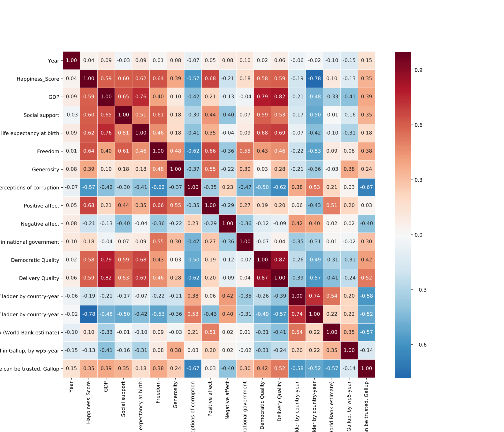

Analysis By:
Carolina Carrillo
Machine Learning Model Featured: Correlation Maps (PCA)
Project Python Libraries: Pandas | Scikit-learn, Math & SciPy | Plotly, Matplotlib & Seaborn
Model Details & Objectives
There are many factors that affect directly or indirectly the general happiness of a country. Being such a subjective matter, knowing exactly what factors are the ones that influence the happiness of a population the most is a challenge. For my analysis I used the World Happiness report from 2019, this report contains information about a Happiness Score of each country which has been computed using the answers from a statistically representative survey.
Data Cleaning & Data Analysis
As an outline the following steps were taken for the analysis:
- Data cleaning and preparation
- Union of two datasets
- Data analysis plotting information on a world map
- Creation of a Regression model to predict the Happiness Score
- Evaluation of a Regression model
The Heatmap below shows the correlation of any variable to another. For instance, we see that the Freedom score and Happiness Score are highly correlated, just like the Life Expectancy and GDP are.
Correlation Heat Map
Correlation Heat Map Final
This plot is showing some very clear conclusions. The first noticeable fact is that the Happiness Score is highly correlated with positive effect of the country. The positive affect is the average measurement of happiness, laughter and enjoyment from polls given to citizens of each country. The positive affect, in turn, is also highly correlated with Freedom. Knowing these two facts, it's reasonable to confirm that freedom allows people to laugh, and enjoy their everyday lives therefore impacting the Happiness Score of the country.
In order to have a more consistent analysis with my other teammates a second heatmap was created with the combined dataset which includes data from both OECD and the happiness report. Using this dataset the results obtained are different, the highest correlated variables that impact happiness are Avg. Wages, Delivery Quality, Democratic Quality and Life expectancy at Birth.
On the other hand, the indicator Perceptions of corruption is inversely correlated, in general with the majority of the other indicators, including the happiness score. It's logic to confirm, then, that the corrupt countries cause a decrease in the happiness of the population.
Since I wanted to predict the happiness score of each country from its indicators, I decided to do a linear regression and some polynomial regressions of different degrees, this can be seen below.


These plots can show us how adjusted the regressions are with the data using only an indicator each time. All the columns were used to predict the happiness score, in order to plot the regression result line I performed PCA to the data. PCA finds the principal components of data, basically it reduces the data down into its basic components, stripping away any unnecessary parts. By applying PCA to the data we obtained a single “feature” that allowed us to represent all the attribute columns in a single axis.
Conclusion
- The regression functions are fitting properly the distribution of the data.
- Increasing the degree of the polynomial function can cause better results, but also the appearance of overfitting.
- Happiness Ranking basically depends on Economy. Countries having strong GDP rate are happiest countries indeed.
- Happiness score depends on family, health, freedom, trust in govt. etc. All of these terms have a great linear relationship with happiness score.
- Utilizing the new dataset we can see that the OECD data influences more economic factors, rather than social ones which boost the impact they have on happiness therefore we have variables like Average Wage having a higher correlation than positive affect.
GitHub Code
Happiness Project: Happiness Factors Reviewed (PCA)